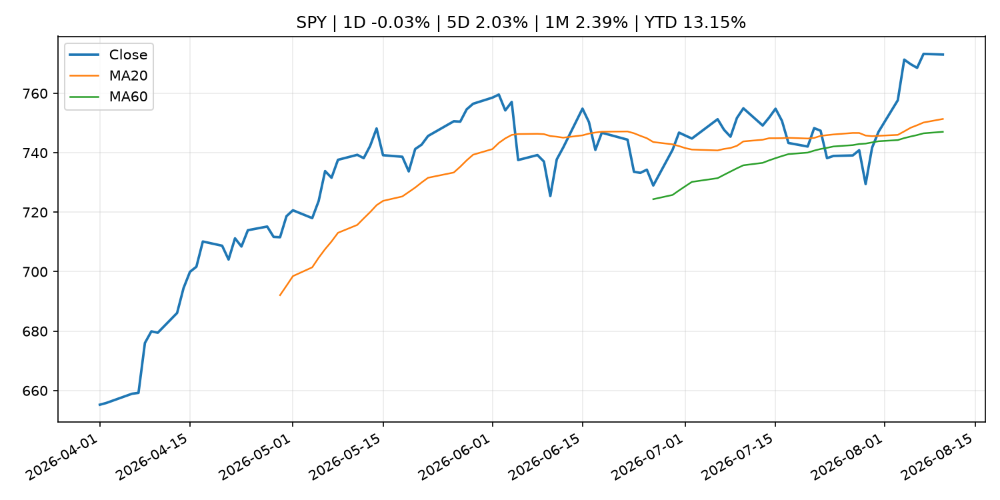
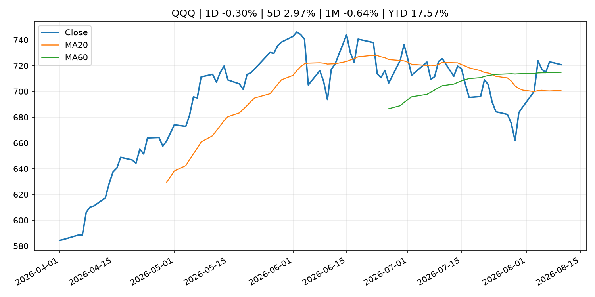
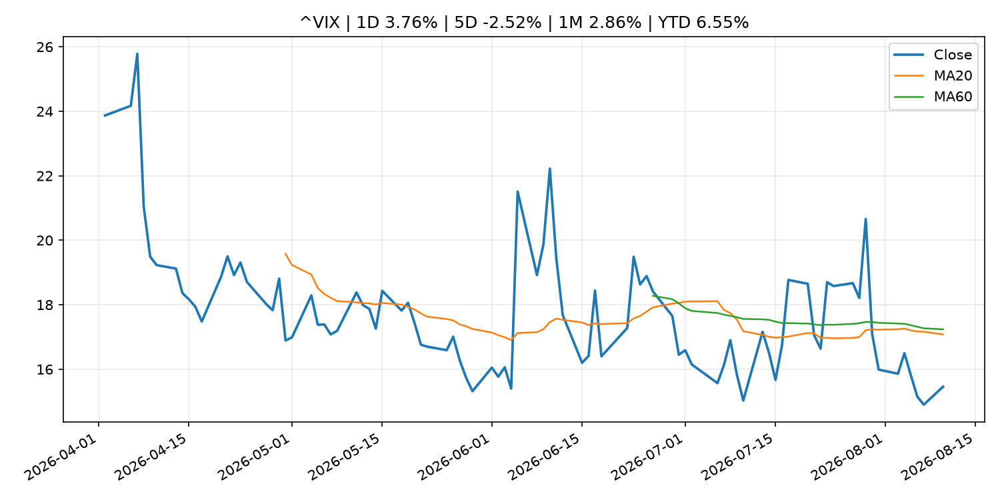
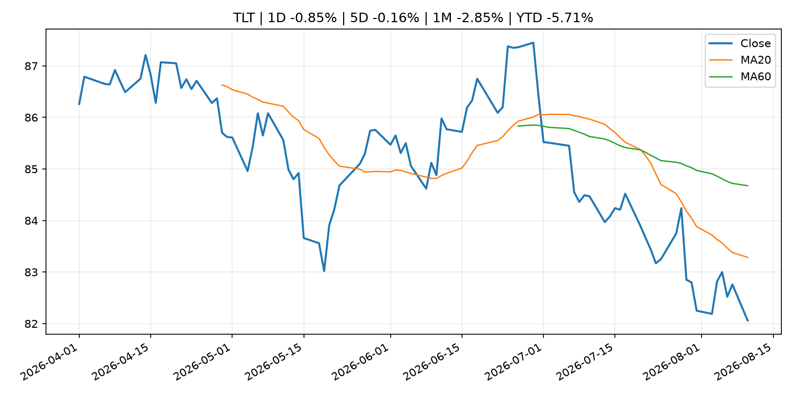
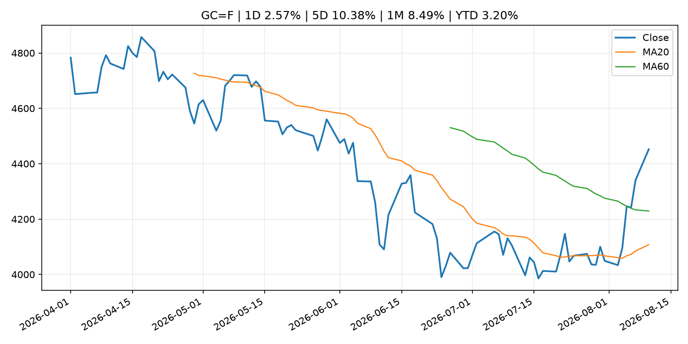
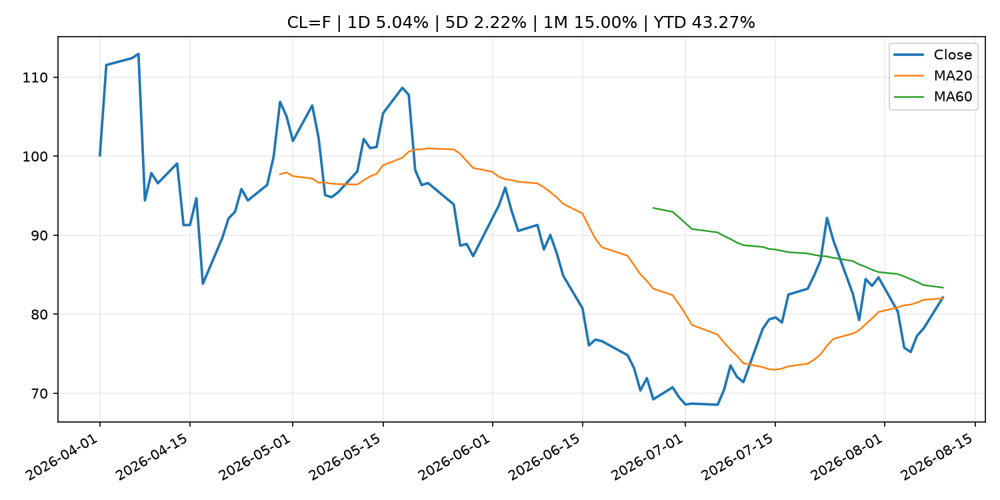
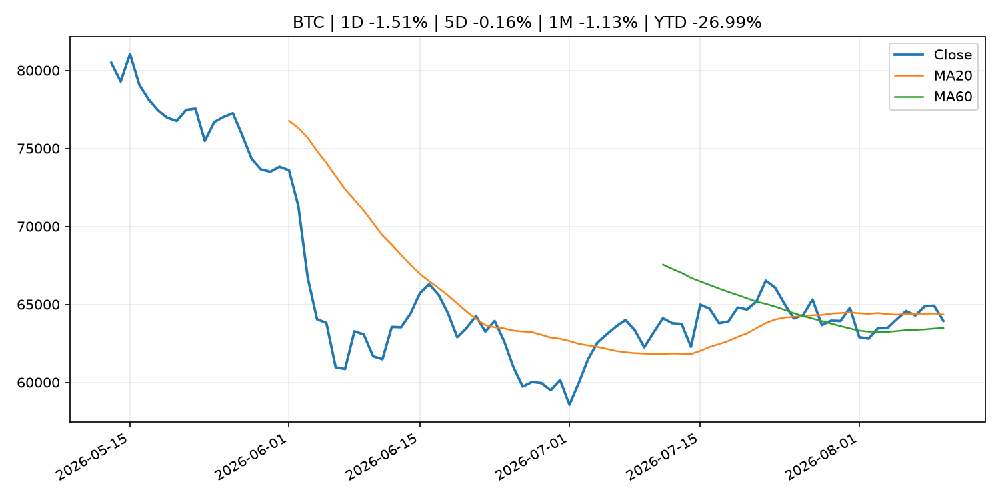
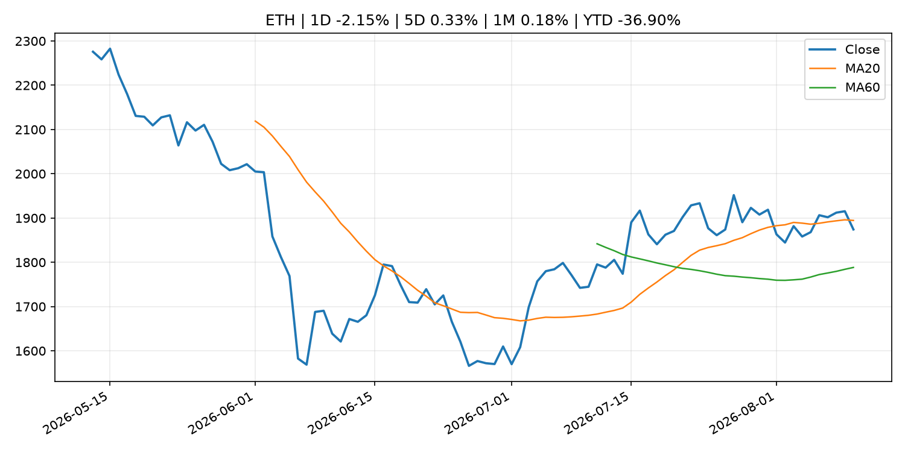
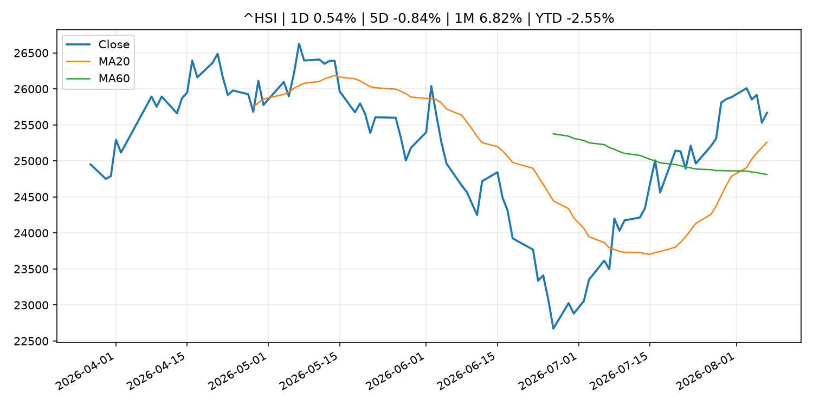

Global Macro Morning Briefing - 2026-08-11
Not financial advice / 非投资建议。
0. 今日总览
- 市场状态：unknown。市场信号不足，暂不判断明确状态。
- 今日三大主线：
- macro_data: U.S. CPI inflation, Securitize, Gemini among earnings reports: Crypto Week Ahead
- regulation: SEC Charges Private Fund Adviser Adit Ventures Management, Its CEO and Affiliated General Partners in Alleged Fraud
- crypto_market_structure: Inside stablecoin firm BVNK’s journey to a $1.8B acquisition by Mastercard
- 一句话结论：今日晨报重点关注：这类宏观数据会直接改变市场对通胀、增长和政策路径的预期。；监管变化会改变行业盈利预期和资产风险溢价。。跨资产方面，SPY 1D -0.03%；QQQ 1D -0.30%；^VIX 1D 3.76%；TLT 1D -0.85%；GC=F 1D 2.57%；CL=F 1D 5.04%；BTC 1D -1.51%；ETH 1D -2.15%；市场信号不足，暂不判断明确状态。政策、通胀、利率、美元、美债、能源和加密监管仍是主要观察线索。所有结论仅基于公开数据与短摘要整理，不构成投资建议。
1. 隔夜跨资产市场
- 美股：SPY 1D -0.03%，QQQ 1D -0.30%，整体趋势需结合 VIX 和利率确认。
- 美债/美元：TLT 1D -0.85%，美元指数 1D 0.21%，是判断折现率压力的核心线索。
- 黄金/原油：黄金 1D 2.57%，原油 1D 5.04%，用于观察避险、通胀和地缘风险。
- 加密：BTC 1D -1.51%，ETH 1D -2.15%，关注是否独立于纳指走出加密自身行情。
- 港股/A股：恒生 1D 0.54%，沪深300/上证 1D n/a，重点看中国政策预期与人民币线索。
- 风险观察：关注后续数据是否确认当前跨资产信号。
US_EQUITY
| symbol | latest close | 1D | 5D | 1M | YTD | trend |
|---|---|---|---|---|---|---|
| SPY | 773.03 | -0.03% | 2.03% | 2.39% | 13.15% | uptrend |
| QQQ | 720.87 | -0.30% | 2.97% | -0.64% | 17.57% | range_bound |
| DIA | 538.99 | -0.12% | 1.46% | 2.51% | 11.45% | uptrend |
| IWM | 299.98 | -0.52% | 1.27% | 1.35% | 20.58% | uptrend |
| VTI | 381.63 | -0.04% | 2.08% | 2.40% | 13.48% | uptrend |
US_MACRO_MARKET
| symbol | latest close | 1D | 5D | 1M | YTD | trend |
|---|---|---|---|---|---|---|
| ^VIX | 15.46 | 3.76% | -2.52% | 2.86% | 6.55% | downtrend |
| DX-Y.NYB | 99.81 | 0.21% | -0.15% | -1.15% | 1.41% | range_bound |
| TLT | 82.06 | -0.85% | -0.16% | -2.85% | -5.71% | downtrend |
| IEF | 92.76 | -0.44% | -0.06% | -0.93% | -3.46% | downtrend |
COMMODITIES
| symbol | latest close | 1D | 5D | 1M | YTD | trend |
|---|---|---|---|---|---|---|
| GC=F | 4,452.40 | 2.57% | 10.38% | 8.49% | 3.20% | range_bound |
| SI=F | 65.93 | 4.11% | 14.34% | 10.24% | -6.55% | range_bound |
| CL=F | 82.12 | 5.04% | 2.22% | 15.00% | 43.27% | range_bound |
| BZ=F | 87.70 | 4.97% | 4.69% | 15.38% | 44.36% | range_bound |
| NG=F | 2.78 | 4.32% | -0.14% | -5.54% | -23.24% | strong_downtrend |
| HG=F | 6.63 | 0.92% | 1.80% | 6.38% | 17.57% | strong_uptrend |
HK_MARKET
| symbol | latest close | 1D | 5D | 1M | YTD | trend |
|---|---|---|---|---|---|---|
| ^HSI | 25,668.03 | 0.54% | -0.84% | 6.82% | -2.55% | strong_uptrend |
| 0700.HK | 481.40 | 0.54% | -1.84% | 4.61% | -22.73% | uptrend |
| 9988.HK | 126.70 | 2.34% | 1.20% | 14.97% | -14.97% | strong_uptrend |
| 3690.HK | 93.90 | 1.84% | 0.48% | 19.31% | -10.23% | strong_uptrend |
| 1810.HK | 27.62 | 2.07% | -1.22% | 6.89% | -31.43% | range_bound |
| 1211.HK | 92.30 | 2.38% | -2.74% | 8.72% | -6.53% | strong_uptrend |
CRYPTO
| symbol | latest close | 1D | 5D | 1M | YTD | trend |
|---|---|---|---|---|---|---|
| BTC | 63,936.96 | -1.51% | -0.16% | -1.13% | -26.99% | range_bound |
| ETH | 1,874.22 | -2.15% | 0.33% | 0.18% | -36.90% | range_bound |
| SOLANA | 76.10 | 0.17% | 3.27% | -0.27% | -38.88% | uptrend |
| BINANCECOIN | 598.70 | -0.30% | 1.01% | 4.94% | -30.60% | strong_uptrend |
| RIPPLE | 1.01 | -2.75% | -5.76% | -7.84% | -45.08% | strong_downtrend |
2. 今日最重要的 10 条新闻
1. U.S. CPI inflation, Securitize, Gemini among earnings reports: Crypto Week Ahead
- 来源：CoinDesk
- 时间：2026-08-10T08:57:04+00:00
- 地区：global
- 事件类型：macro_data
- 重要性层级：Tier 1
- 一句话摘要：U.S. CPI inflation, Securitize, Gemini among earnings reports: Crypto Week Ahead
- 为什么重要：这类宏观数据会直接改变市场对通胀、增长和政策路径的预期。
- 可能影响：主要影响 DXY，方向为 positive，强度 high；通胀压力可能推高政策利率预期并支撑美元。
- 资产：DXY 方向：positive 强度：high 原因：通胀压力可能推高政策利率预期并支撑美元。
- 资产：TLT 方向：negative 强度：high 原因：通胀上行通常推升收益率、压低长债价格。
- 资产：QQQ 方向：negative 强度：high 原因：更高利率对成长股估值折现率不利。
- 资产：SPY 方向：mixed 强度：medium 原因：名义增长可能支撑收入，但更高利率压制估值。
- 资产：GC=F 方向：mixed 强度：medium 原因：通胀对黄金是支撑，但实际利率上行会形成压力。
- 资产：BTC 方向：mixed 强度：medium 原因：抗通胀叙事和流动性收紧可能相互抵消。
- 原文链接：https://www.coindesk.com/markets/2026/08/10/u-s-cpi-inflation-securitize-gemini-among-earnings-reports-crypto-week-ahead
2. SEC Charges Private Fund Adviser Adit Ventures Management, Its CEO and Affiliated General Partners in Alleged Fraud
- 来源：SEC Press Releases
- 时间：2026-08-10T14:00:00-04:00
- 地区：US
- 事件类型：regulation
- 重要性层级：Tier 2
- 一句话摘要：The Securities and Exchange Commission today charged New York-based investment adviser Adit Ventures Management LLC, its CEO Eric Munson, and three affiliated general partners, Adit Ventures LLC; Adit Ventures II LLC; and Adit Ventures III LLC (the…
- 为什么重要：监管变化会改变行业盈利预期和资产风险溢价。
- 可能影响：主要影响 BTC，方向为 mixed，强度 high；加密监管或 ETF 进展会改变 BTC 的资金流和风险溢价。
- 资产：BTC 方向：mixed 强度：high 原因：加密监管或 ETF 进展会改变 BTC 的资金流和风险溢价。
- 资产：ETH 方向：mixed 强度：high 原因：监管框架会影响 ETH 产品化和机构参与度。
- 资产：COIN 方向：mixed 强度：medium 原因：监管清晰度和执法风险会影响交易平台估值。
- 资产：crypto market 方向：mixed 强度：high 原因：信息影响整个加密市场结构，但方向取决于细节。
- 原文链接：https://www.sec.gov/newsroom/press-releases/2026-73-sec-charges-private-fund-adviser-adit-ventures-management-its-ceo-affiliated-general-partners
3. Inside stablecoin firm BVNK’s journey to a $1.8B acquisition by Mastercard
- 来源：CoinDesk
- 时间：2026-08-10T07:52:00+00:00
- 地区：global
- 事件类型：crypto_market_structure
- 重要性层级：Tier 2
- 一句话摘要：Inside stablecoin firm BVNK’s journey to a $1.8B acquisition by Mastercard
- 为什么重要：加密市场结构和监管变化会影响 BTC、ETH 及相关股票的风险溢价。
- 可能影响：主要影响 BTC，方向为 mixed，强度 high；加密监管或 ETF 进展会改变 BTC 的资金流和风险溢价。
- 资产：BTC 方向：mixed 强度：high 原因：加密监管或 ETF 进展会改变 BTC 的资金流和风险溢价。
- 资产：ETH 方向：mixed 强度：high 原因：监管框架会影响 ETH 产品化和机构参与度。
- 资产：COIN 方向：mixed 强度：medium 原因：监管清晰度和执法风险会影响交易平台估值。
- 资产：crypto market 方向：mixed 强度：high 原因：信息影响整个加密市场结构，但方向取决于细节。
- 原文链接：https://www.coindesk.com/business/2026/08/10/inside-stablecoin-firm-bvnk-s-journey-to-a-usd1-8b-acquisition-by-mastercard
4. Live updates: WTI crude oil up 5% and back to $80, as bitcoin drops below $64,000
- 来源：CoinDesk
- 时间：2026-08-10T06:56:50+00:00
- 地区：global
- 事件类型：commodity_supply
- 重要性层级：Tier 2
- 一句话摘要：Live updates: WTI crude oil up 5% and back to $80, as bitcoin drops below $64,000
- 为什么重要：大宗商品供给变化会影响能源价格、通胀预期和资源股。
- 可能影响：主要影响 CL=F，方向为 positive，强度 high；供给扰动或 OPEC 减产通常推升 WTI 原油。
- 资产：CL=F 方向：positive 强度：high 原因：供给扰动或 OPEC 减产通常推升 WTI 原油。
- 资产：BZ=F 方向：positive 强度：high 原因：全球供给风险通常直接影响 Brent 原油。
- 资产：SPY 方向：mixed 强度：medium 原因：能源股可能受益，但通胀和成本压力不利于宽基风险资产。
- 原文链接：https://www.coindesk.com/markets/2026/08/10/live-updates-btc-above-usd65-000-even-as-the-senate-punts-the-clarity-act-to-the-fall
5. Rocket Lab reveals some big plans, but its stock is dropping on mixed earnings
- 来源：MarketWatch Top Stories
- 时间：2026-08-10T21:37:00+00:00
- 地区：US
- 事件类型：earnings
- 重要性层级：Tier 2
- 一句话摘要：The company is looking to expand its reach in Europe and building up its backlog.
- 为什么重要：大型科技股盈利和资本开支会影响纳指、半导体和 AI 交易主线。
- 可能影响：可能影响利率、汇率、风险资产或大宗商品预期，但当前公开信息不足以判断明确方向。
- 资产：暂无明确资产映射
- 方向：unknown
- 强度：low
- 原因：公开信息不足以判断方向。
- 原文链接：https://www.marketwatch.com/story/rocket-lab-reveals-some-big-plans-but-its-stock-is-dropping-on-mixed-earnings-4012ba2b?mod=mw_rss_topstories
6. Good news for stock-market bulls: Corporate earnings growth is no longer being driven just by tech
- 来源：MarketWatch Top Stories
- 时间：2026-08-10T20:00:00+00:00
- 地区：US
- 事件类型：earnings
- 重要性层级：Tier 2
- 一句话摘要：For years, the S&P 500’s earnings engine had only one driver: the “Magnificent Seven.” This quarter, the rest of the market has started pulling its weight.
- 为什么重要：大型科技股盈利和资本开支会影响纳指、半导体和 AI 交易主线。
- 可能影响：可能影响利率、汇率、风险资产或大宗商品预期，但当前公开信息不足以判断明确方向。
- 资产：暂无明确资产映射
- 方向：unknown
- 强度：low
- 原因：公开信息不足以判断方向。
- 原文链接：https://www.marketwatch.com/story/good-news-for-stock-market-bulls-corporate-earnings-growth-is-no-longer-being-driven-just-by-tech-ddac973b?mod=mw_rss_topstories
7. Wall Street thinks inflation is under control. Here’s why investors shouldn’t buy it.
- 来源：MarketWatch Top Stories
- 时间：2026-08-10T21:32:00+00:00
- 地区：US
- 事件类型：other
- 重要性层级：Tier 3
- 一句话摘要：Uncle Sam needs inflation, not just economic growth, to escape today’s debt crisis.
- 为什么重要：这条信息暂未匹配到重大宏观、政策或市场事件，更适合作为背景跟踪。
- 可能影响：主要影响 DXY，方向为 positive，强度 high；通胀压力可能推高政策利率预期并支撑美元。
- 资产：DXY 方向：positive 强度：high 原因：通胀压力可能推高政策利率预期并支撑美元。
- 资产：TLT 方向：negative 强度：high 原因：通胀上行通常推升收益率、压低长债价格。
- 资产：QQQ 方向：negative 强度：high 原因：更高利率对成长股估值折现率不利。
- 资产：SPY 方向：mixed 强度：medium 原因：名义增长可能支撑收入，但更高利率压制估值。
- 资产：GC=F 方向：mixed 强度：medium 原因：通胀对黄金是支撑，但实际利率上行会形成压力。
- 资产：BTC 方向：mixed 强度：medium 原因：抗通胀叙事和流动性收紧可能相互抵消。
- 原文链接：https://www.marketwatch.com/story/fed-chair-kevin-warsh-promises-2-inflation-but-skyrocketing-u-s-debt-makes-that-a-pipe-dream-ba448651?mod=mw_rss_topstories
8. Bitcoin tops $65,000 with U.S. inflation data due this week
- 来源：CoinDesk
- 时间：2026-08-10T04:39:37+00:00
- 地区：global
- 事件类型：other
- 重要性层级：Tier 3
- 一句话摘要：Bitcoin tops $65,000 with U.S. inflation data due this week
- 为什么重要：这条信息暂未匹配到重大宏观、政策或市场事件，更适合作为背景跟踪。
- 可能影响：主要影响 DXY，方向为 positive，强度 high；通胀压力可能推高政策利率预期并支撑美元。
- 资产：DXY 方向：positive 强度：high 原因：通胀压力可能推高政策利率预期并支撑美元。
- 资产：TLT 方向：negative 强度：high 原因：通胀上行通常推升收益率、压低长债价格。
- 资产：QQQ 方向：negative 强度：high 原因：更高利率对成长股估值折现率不利。
- 资产：SPY 方向：mixed 强度：medium 原因：名义增长可能支撑收入，但更高利率压制估值。
- 资产：GC=F 方向：mixed 强度：medium 原因：通胀对黄金是支撑，但实际利率上行会形成压力。
- 资产：BTC 方向：mixed 强度：medium 原因：抗通胀叙事和流动性收紧可能相互抵消。
- 原文链接：https://www.coindesk.com/markets/2026/08/10/bitcoin-tops-usd65-000-with-us-inflation-data-due-this-week
3. 政策与央行观察
1. SEC Charges Private Fund Adviser Adit Ventures Management, Its CEO and Affiliated General Partners in Alleged Fraud
- 来源：SEC Press Releases
- 时间：2026-08-10T14:00:00-04:00
- 地区：US
- 事件类型：regulation
- 重要性层级：Tier 2
- 一句话摘要：The Securities and Exchange Commission today charged New York-based investment adviser Adit Ventures Management LLC, its CEO Eric Munson, and three affiliated general partners, Adit Ventures LLC; Adit Ventures II LLC; and Adit Ventures III LLC (the…
- 为什么重要：监管变化会改变行业盈利预期和资产风险溢价。
- 可能影响：主要影响 BTC，方向为 mixed，强度 high；加密监管或 ETF 进展会改变 BTC 的资金流和风险溢价。
- 资产：BTC 方向：mixed 强度：high 原因：加密监管或 ETF 进展会改变 BTC 的资金流和风险溢价。
- 资产：ETH 方向：mixed 强度：high 原因：监管框架会影响 ETH 产品化和机构参与度。
- 资产：COIN 方向：mixed 强度：medium 原因：监管清晰度和执法风险会影响交易平台估值。
- 资产：crypto market 方向：mixed 强度：high 原因：信息影响整个加密市场结构，但方向取决于细节。
- 原文链接：https://www.sec.gov/newsroom/press-releases/2026-73-sec-charges-private-fund-adviser-adit-ventures-management-its-ceo-affiliated-general-partners
2. Inside stablecoin firm BVNK’s journey to a $1.8B acquisition by Mastercard
- 来源：CoinDesk
- 时间：2026-08-10T07:52:00+00:00
- 地区：global
- 事件类型：crypto_market_structure
- 重要性层级：Tier 2
- 一句话摘要：Inside stablecoin firm BVNK’s journey to a $1.8B acquisition by Mastercard
- 为什么重要：加密市场结构和监管变化会影响 BTC、ETH 及相关股票的风险溢价。
- 可能影响：主要影响 BTC，方向为 mixed，强度 high；加密监管或 ETF 进展会改变 BTC 的资金流和风险溢价。
- 资产：BTC 方向：mixed 强度：high 原因：加密监管或 ETF 进展会改变 BTC 的资金流和风险溢价。
- 资产：ETH 方向：mixed 强度：high 原因：监管框架会影响 ETH 产品化和机构参与度。
- 资产：COIN 方向：mixed 强度：medium 原因：监管清晰度和执法风险会影响交易平台估值。
- 资产：crypto market 方向：mixed 强度：high 原因：信息影响整个加密市场结构，但方向取决于细节。
- 原文链接：https://www.coindesk.com/business/2026/08/10/inside-stablecoin-firm-bvnk-s-journey-to-a-usd1-8b-acquisition-by-mastercard
4. 市场异动与图表
- VIX 上涨 3.76%
- TLT 下跌 -0.85%
- Gold 上涨 2.57%
- Oil 上涨 5.04%
- ETH 下跌 -2.15%
SPY

QQQ

^VIX

TLT

GC=F

CL=F

BTC

ETH

^HSI

5. 华尔街与机构公开观点
- 暂无可靠公开观点。
6. 今日重点关注
- 经济数据：经济数据：暂无可靠公开日历数据；如配置经济日历源后可自动填充。
- 央行讲话：央行讲话：暂无可靠公开日历数据；重点跟踪 Fed、ECB、BoJ、PBOC 官网 RSS。
- 财报：财报：暂无可靠数据。
- 政策事件：政策事件：暂无可靠数据。
- 风险提醒：风险提醒：关注数据源失败项、突发地缘风险、利率和美元的二阶反应。
7. 英文金融表达与宏观概念
- inflation expectations：通胀预期，指家庭、企业或市场对未来通胀的预估。 例句：Inflation expectations can shape wage bargaining and bond yields.
- real yield：实际收益率，名义利率扣除通胀预期后的收益率。 例句：Gold often reacts more to real yields than nominal yields.
- supply disruption：供给扰动，通常指能源或商品供应受冲突、减产或天气影响。 例句：Supply disruption can lift oil prices and inflation expectations.
- market structure：市场结构，指交易、托管、清算、ETF、监管等制度安排。 例句：Crypto market structure rules can affect institutional participation.
- terminal rate：终端利率，市场预期本轮加息周期的最高政策利率。 例句：A higher terminal rate can pressure growth stocks.
- soft landing：软着陆，指通胀回落而经济避免明显衰退。 例句：Markets often rally when data support a soft landing.
8. 背景材料
- Wall Street thinks inflation is under control. Here’s why investors shouldn’t buy it.（MarketWatch Top Stories，other）：Uncle Sam needs inflation, not just economic growth, to escape today’s debt crisis.
- Trump Media’s bitcoin holdings shrink as crypto losses hit $361 million（CoinDesk，other）：Trump Media’s bitcoin holdings shrink as crypto losses hit $361 million
- Bitwise's Rasmussen: Circle is mispriced as stablecoins head toward trillions（CoinDesk，other）：Bitwise's Rasmussen: Circle is mispriced as stablecoins head toward trillions
- Strategy builds $4.75 billion cash cushion as only bitcoin isn’t enough for investors（CoinDesk，other）：Strategy builds $4.75 billion cash cushion as only bitcoin isn’t enough for investors
- Should wealthier Americans forgo their Social Security benefits as a charitable gesture?（MarketWatch Top Stories，other）：A reader writes: “I will likely be in a position to decline my benefits.”
- Three reasons Goldman's co-head of global banking and markets says to stay invested（CNBC Economy，other）：Goldman Sachs' Ashok Varadhan pointed to three reasons for his constructive outlook.
- Grayscale quietly drops Cardano, Polkadot and Hedera ETF plans（CoinDesk，other）：Grayscale quietly drops Cardano, Polkadot and Hedera ETF plans
- Strategy sells 1,690 bitcoin, raises $653 million from MSTR shares（CoinDesk，other）：Strategy sells 1,690 bitcoin, raises $653 million from MSTR shares
- UK’s FCA to regulate tokenized gold to preserve London’s place as the top hub for bullion（CoinDesk，other）：UK’s FCA to regulate tokenized gold to preserve London’s place as the top hub for bullion
- Bitcoin's BIP-110 episode is free-market capitalism in purest form（CoinDesk，other）：Bitcoin's BIP-110 episode is free-market capitalism in purest form
- Bitcoin steadies above $65,000 as Iran-Oman deal talk eases Hormuz concerns, lifts risk assets（CoinDesk，other）：Bitcoin steadies above $65,000 as Iran-Oman deal talk eases Hormuz concerns, lifts risk assets
- Bitcoin volatility is in meltdown, but downside protection still commands a premium（CoinDesk，other）：Bitcoin volatility is in meltdown, but downside protection still commands a premium
- A rare CME shift: Hedge funds abandon structural shorts to bet on a bitcoin rally（CoinDesk，other）：A rare CME shift: Hedge funds abandon structural shorts to bet on a bitcoin rally
- This bitcoin miner rejected BIP-110 despite mining through a pool that supported it（CoinDesk，other）：This bitcoin miner rejected BIP-110 despite mining through a pool that supported it
- Bitcoin tops $65,000 with U.S. inflation data due this week（CoinDesk，other）：Bitcoin tops $65,000 with U.S. inflation data due this week
- XRP is getting left behind in the crypto bounce even as ETFs keep attracting investor money（CoinDesk，other）：XRP is getting left behind in the crypto bounce even as ETFs keep attracting investor money
- Summary of Opinions at the Monetary Policy Meeting on July 30 and 31, 2026（Bank of Japan Announcements，other）：Summary of Opinions at the Monetary Policy Meeting on July 30 and 31, 2026
- Principal Figures of Financial Institutions (July)（Bank of Japan Announcements，other）：Principal Figures of Financial Institutions (July)
- Release of Latest "Loans and Bills Discounted by Sector" and "Loans to Households" Data（Bank of Japan Announcements，other）：Release of Latest "Loans and Bills Discounted by Sector" and "Loans to Households" Data
- Bitcoin investors pour $853 million into spot ETFs. BlackRock’s IBIT claims the bulk（CoinDesk，other）：Bitcoin investors pour $853 million into spot ETFs. BlackRock’s IBIT claims the bulk
9. 数据源、失败项与免责声明
- 采集时间：2026-08-10T22:35:21
- 数据源：公开 RSS、Yahoo Finance、CoinGecko、AKShare、FRED、SEC data.sec.gov，以及用户自有 inputs/reports 文件。
- 合规说明：不绕过 WSJ、Bloomberg、FT、Reuters 等付费墙；对付费媒体只使用公开 RSS 标题、摘要、链接和发布时间。
- 免责声明：Not financial advice / 非投资建议。本项目仅供个人学习、研究和信息整理，不构成投资建议、交易建议或任何收益承诺。
- 失败或跳过的数据源：
- crypto data failed coin=dogecoin
- China market data failed symbol=上证指数: empty dataframe
- China market data failed symbol=深证成指: empty dataframe
- China market data failed symbol=创业板指: empty dataframe
- China market data failed symbol=沪深300: empty dataframe
- China market data failed symbol=中证500: empty dataframe
- China market data failed symbol=科创50: empty dataframe
- FRED_API_KEY not set; skipping FRED macro series
- SEC failed cik=0000320193
- SEC failed cik=0000789019
- SEC failed cik=0001045810
- SEC failed cik=0001318605
- SEC failed cik=0001577552